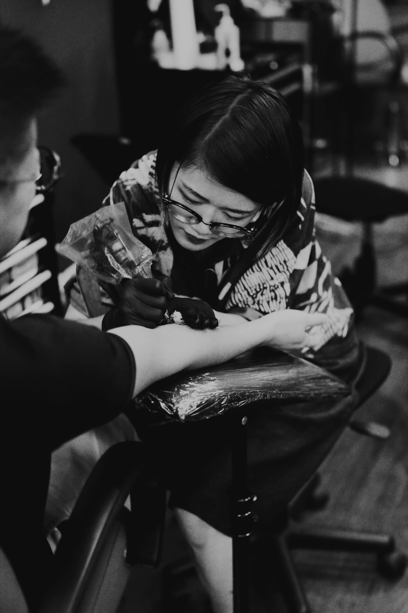

about
a tattooing journey.
yi is a hangzhou-born, toronto-based artist working in downtown toronto.
having graduated from the university of toronto as an art and new media major student, yi has devoted the majority of their time perfecting their skills in tattooing. they started the tattoo journey in the summer of 2015 as an apprentice, and later a resident artist. as of now, they work at a private studio aside from a full time job.
having taken over a decade of drawing lessons due to a lifelong interest that blossomed from a very young age, yi has mastered many tattooing and drawing techniques including line work, hatching and pointillism. in the process of turning traditional drawings into tattoo designs, yi has gradually found a balance between two radically different artistic practices.
“i love it when my clients tell me the little secrets and stories behind their thoughtful custom tattoos. it makes me proud that I can help them bring their visions to life and help them build somewhat of a confidence when they show off their new tattoos.”
as they explain, “it’s small moments like these that inspire me and keep me going even when times get tough. i wish to continuously keep growing and to continue helping others grow by marking their new beginnings and ends with pieces of my art.”
photo credits to runxin zheng